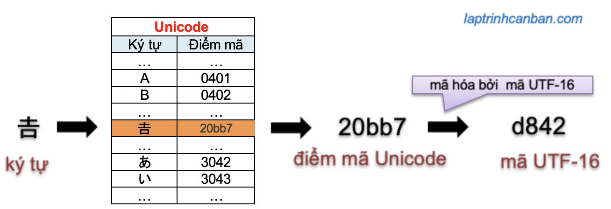
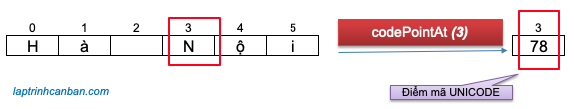

Hướng dẫn cách lấy điểm mã Unicode của ký tự trong chuỗi JavaScript. Bạn sẽ học được cách sử dụng phương thức codePointAt trong JavaScript để lấy điểm mã Unicode (Unicode Code Point) của ký tự trong chuỗi JavaScript tại vị trí chỉ định sau bài học này.
Phương thức codePointAt() trong JavaScript sẽ trả về điểm mã Unicode (Unicode Code Point) của ký tự. Nếu bạn muốn tìm mã UTF-16 của ký tự thì hãy sử dụng tới phương thức charCodeAt() nhé.
Điểm mã Unicode (Unicode Code Point)
Trước khi sử dụng phương thức codePointAt() để lấy điểm mã Unicode của ký tự trong chuỗi JavaScript, hãy tìm hiểu xem điểm mã Unicode (Unicode Code Point) là gì nhé.
Điểm mã Unicode (Unicode Code Point) là gì
Để hiểu khái niệm điểm mã Unicode (Unicode Code Point) thì trước hết chúng ta cần phải hiểu bảng mã Unicode là gì. Theo Wikipedia thì:
Unicode (hay gọi là mã thống nhất; mã đơn nhất) là bộ mã chuẩn quốc tế được thiết kế để dùng làm bộ mã duy nhất cho tất cả các ngôn ngữ khác nhau trên thế giới, kể cả các ngôn ngữ sử dụng ký tự tượng hình phức tạp như chữ Hán của tiếng Trung Quốc, tiếng Nhật, chữ Nôm của tiếng Việt, v.v.
Nói nôm na thì Unicode là bảng mã chuẩn quốc tế được sử dụng để biểu diễn tất cả các ngôn ngữ mà con người sử dụng trên thế giới trong lĩnh vực máy tính.
Chúng ta biết máy tính thì không thể hiểu ngôn ngữ của con người, chúng ta cần phải chuyển ngôn ngữ loài người về dạng mà máy tính có thể hiểu được. Do đó trong bảng mã Unicode đã chuẩn bị một bảng các số thập lục phân mà máy tính có thể hiểu được, trong đó mỗi số sẽ đại điện cho một ký tự trong ngôn ngữ loài người. Lưu ý là các số trong bảng này không được mã hóa.
Và số được gán cho mỗi ký tự để đại diện cho ký tự đó trong hệ thống bảng mã Unicode được gọi là điểm mã (Unicode Code Point).
Ví dụ, ký tự ô trong tiếng Việt sẽ được máy tính hiểu bằng điểm mã đại diện cho nó trong bảng mã Unicode là 224 chẳng hạn.
Sự khác biệt giữa điểm mã Unicode và mã UTF-16
Mặc dù chuẩn thế giới là bảng mã Unicode, nhưng trong mỗi máy tính cá nhân thì lại sử dụng các ngôn ngữ hệ thống khác nhau và cách mã hóa ký tự khác nhau. Ví dụ như máy tính của chúng ta có thể sử dụng bảng mã UTF-8, ASCII chẳng hạn.
Do đó chúng ta cần phải chuyển đổi điểm mã được phân bổ trong Unicode sang một số thập lục phân khác ( mã ) tương ứng với bảng mã sử dụng để máy tính cá nhân có thể hiểu được. Ví dụ nếu máy tính của bạn sử dụng bảng mã ASCII thì chúng ta cần phải chuyển đổi điểm mã Unicode sang mã ASCII.
Do trong JavaScrỉpt sử dụng mã UTF-16 làm mã chính để biểu diễn ký tự, nên mới xuất hiện các xử lý như chuyển điểm mã Unicode sang mã UTF-16, hoặc là lấy điểm mã Unicode hay lấy mã UTF-16 từ chuỗi trong JavaScript.
Chúng ta có thể hiểu mặc dù điểm mã Unicode và mã UTF-16 đều đại diện cho một ký tự trong ngôn ngữ loài người, tuy nhiên sự khác biệt giữa điểm mã Unicode và mã UTF-16 đó chính là chúng đại diện cho ký tự đó trong bảng mã nào mà thôi.
Khái quát lại mối quan hệ cũng như sự khác biệt giữa điểm mã Unicode và mã UTF-16:

codePointAt() trong JavaScript
codePointAt() là một phương thức của đối tượng String trong JavaScript, có tác dụng lấy điểm mã Unicode của ký tự trong chuỗi ban đầu tại vị trí index chỉ định.

Chúng ta sử dụng phương thức codePointAt() với cú pháp sau đây:
str.codePointAt(index)
Trong đó str là chuỗi ban đầu và codePointAt sẽ lấy ra ký tự trong chuỗi tại vị trí index chỉ định. Lưu ý là chúng ta chỉ có thể sử dụng index dương có phạm vi từ 0 đến str.length - 1 mà thôi. Nếu lược bỏ index thì mặc định index sẽ bằng 0.
Và nếu chỉ định một index âm, hoặc là index nằm ngoài phạm vi index của chuỗi thì giá trị undefined sẽ được trả về.
Trong bảng mã Unicode thì các ký tự sẽ được đại diện bởi một điểm mã Unicode có giá trị trong phạm vi từ 0 đến 1114111 (0x0000 đến 0x10FFFF ), do đó kết quả của codePointAt() cũng sẽ là một giá trị nằm trong phạm vi này.
Lưu ý là các ký tự đặc biệt Surrogate pair characters mặc dù được biểu diễn bởi 2 mã UTF-16 và chúng ta cũng có thể lấy ra 2 điểm mã Unicode tương ứng, tuy nhiên chúng cũng được đại điện bởi 1 điểm mã Unicode ( lấy từ High surrogate (mã đại diện trên)) mà thôi.
Do đó, ngoại trừ các ký tự Surrogate pair characters (như Emoji ‘😸’ hoặc hán tự tiếng Trung) thì điểm mã Unicode và mã UTF-16 của các ký tự trong JavaScript là giống nhau.
Lấy điểm mã Unicode của ký tự trong chuỗi JavaScript bằng codePointAt()
Chúng ta sử dụng phương thức codePointAt() để lấy mã Unicode của ký tự bình thường trong chuỗi JavaScript.
Hãy cùng xem các ví dụ cụ thể sau đây.
Ví dụ 1: sử dụng index dương để lấy mã Unicode của ký tự tại vị trí chỉ định
let word = 'tpHCM'; |
Ví dụ 2: lược bỏ index khi sử dụng phương thức charAt
let word = 'tpHCM'; |
Ví dụ 3: Giá trị undefined trả về khi sử dụng index nằm ngoài phạm vi có thể sử dụng
let word = 'tpHCM'; |
Ở ví dụ này thì do chúng ta chỉ định index nằm ngoài phạm vi có thể nên kết quả trả về sẽ chỉ là giá trị undefined mà thôi.
Ví dụ 4: lấy mã Unicode của ký tự Surrogate pair characters tại vị trí chỉ định
let icon = '😸'; |
Tuy trả về 2 kết quả điểm mã Unicode tương ứng với 2 cặp surrogate tạo nên Surrogate pair characters, tuy nhiên chúng ta chỉ cần sử dụng điểm mã Unicode High surrogate để đại diện cho ký tự này mà thôi.
Sự khác biệt giữa charCodeAt và codePointAt trong JavaScript
Ở phần trên chúng ta đã biết, ngoại trừ các ký tự Surrogate pair characters (như Emoji ‘😸’ hoặc hán tự tiếng Trung) thì điểm mã Unicode và mã UTF-16 của các ký tự trong JavaScript là giống nhau.
Nói cách khác thì kết quả của phương thức charCodeAt() khi tìm mã UTF-16 và phương thức codePointAt() khi tìm điểm mã Unicode của ký tự trong phần lớn trường hợp là giống nhau, ngoại trừ khi ký tự đó là Surrogate pair characters.
Thật vậy, chúng ta có thể kiểm tra kết quả của chúng giống nhau như sau:
let word = 'tpHCM'; |
Vậy thì hai phương thức này khác nhau ở chỗ nào? Câu trả lời chính là kết quả của chúng đại diện cho ký tự trong bảng mã nào.
Chúng ta có thể khái quát sự khác biệt giữa charCodeAt và codePointAt trong JavaScript như sau:
charCodeAt() tìm điểm mã UTF-16 của một ký tự, và đưa ra kết quả là một giá trị đại diện cho ký tự đó trong bảng mã UTF-16 có phạm vi từ 0 đến 65535 (0x0000 đến 0xFFFF). Trong khi đó codePointAt() lại tìm điểm mã Unicode của ký tự, và đưa ra kết quả là một giá trị đại diện cho ký tự đó trong bảng mã Unicode có phạm vi từ 0 đến 1114111 (0x0000 đến 0x10FFFF ).
charCodeAt() trả về giá trị
NaNkhi chỉ định index nằm ngoài phạm vi, trong khi đó codePointAt() lại trả về giá trị undefined khi chỉ định index nằm ngoài phạm vi.
Một ví dụ cụ thể, giá trị trả về của 2 phương thức này khi sử dụng với hán tự tiếng Trung hoặc với emoji (là các Surrogate pair characters trong JavaScript) là khác nhau như sau:
console.log("𠮷".codePointAt(0));//134071 |
Tổng kết
Trên đây Kiyoshi đã hướng dẫn bạn cách lấy điểm mã Unicode của ký tự trong chuỗi JavaScript bằng phương thức codePointAt() rồi. Để nắm rõ nội dung bài học hơn, bạn hãy thực hành viết lại các ví dụ của ngày hôm nay nhé.
Và hãy cùng tìm hiểu những kiến thức sâu hơn về JavaScript trong các bài học tiếp theo.
HOME>> học javascript - lập trình javascript cơ bản>>02. chuỗi trong javascript